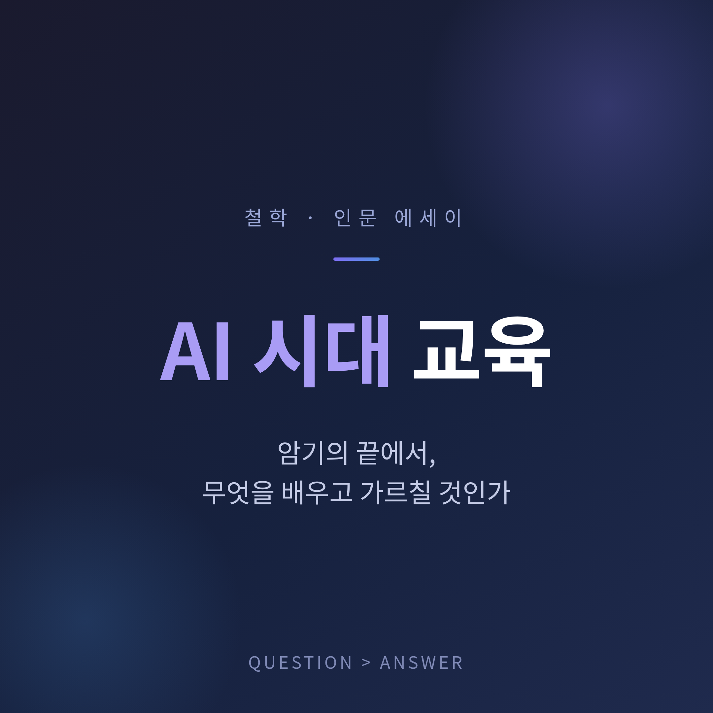
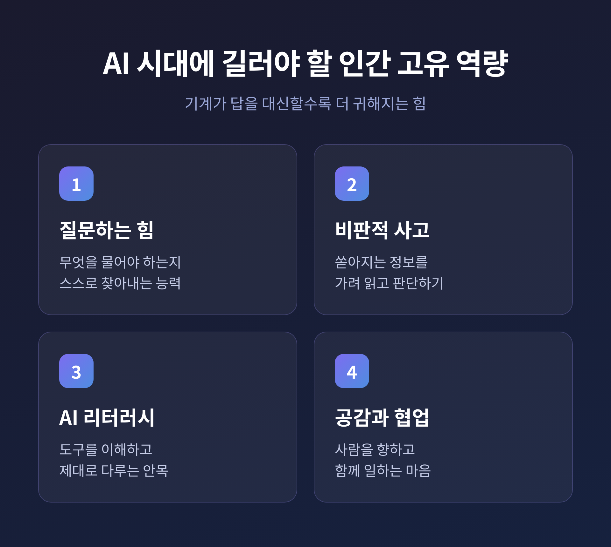
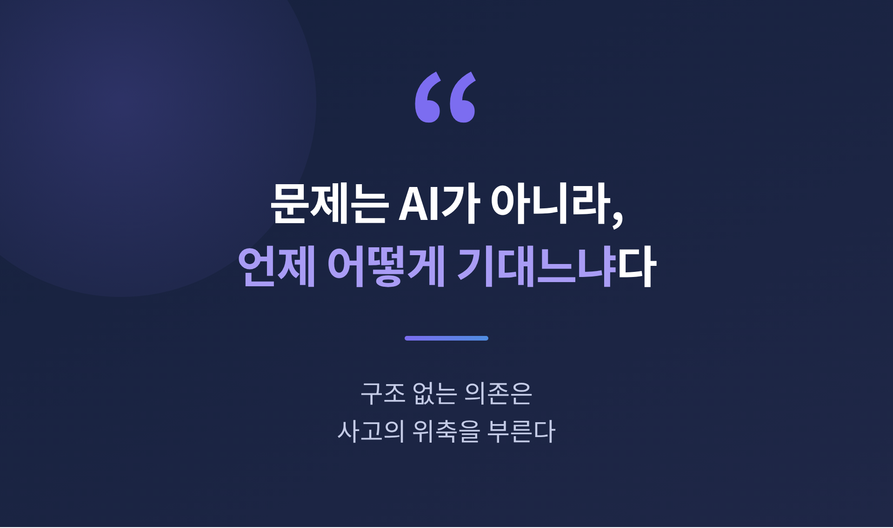
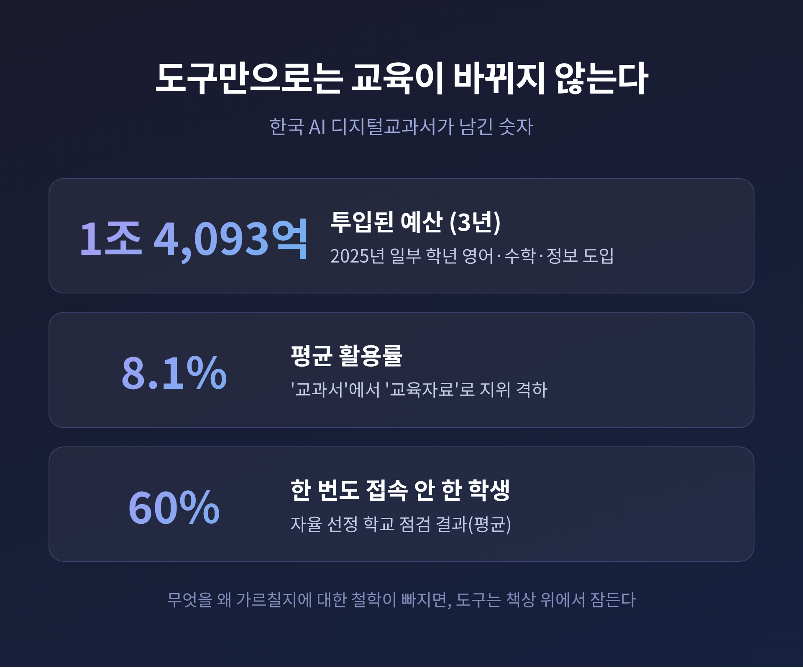

이번 글에서는 AI 시대 교육이 어디로 가야 하는지를 정리해 보겠습니다.
지식을 외우는 일이 더는 경쟁력이 되지 않는 시대입니다. 답은 손안의 AI가 즉시 내놓습니다. 그렇다면 우리는 무엇을 배우고, 무엇을 가르쳐야 할까요. 이 물음을 양면으로 함께 살펴보려 합니다.
OECD는 2026년 5월 '디지털 교육 전망' 보고서를 내놓았습니다.
핵심 메시지는 분명합니다. 교육의 초점을 지식 습득에서 비판적 사고로 옮기라는 것입니다.
예전엔 많이 아는 사람이 앞섰습니다. 지금은 잘 묻고, 잘 판단하는 사람이 앞섭니다.
AI는 주어진 질문에 답합니다. 그러나 '무엇을 물어야 하는가'는 스스로 찾지 못합니다. 질문은 여전히 사람의 몫입니다.
아인슈타인의 말이 새삼 떠오릅니다. 한 시간이 주어진다면 55분은 문제를 정의하는 데 쓰겠다고 했습니다. AI 시대에 이 말은 더 무겁게 다가옵니다.

반대편의 그림자도 봐야 합니다.
MIT 미디어랩은 2025년 6월 한 연구를 공개했습니다. 18세에서 39세 54명을 세 그룹으로 나눠 에세이를 쓰게 하고 뇌파를 측정했습니다.
결과는 생각할 거리를 남깁니다. 아무 도구 없이 쓴 그룹의 뇌 연결성이 가장 높았습니다. 반대로 ChatGPT를 쓴 그룹은 뇌 관여도가 가장 낮았습니다.
이들이 쓴 글은 서로 비슷했고, 독창성이 부족했습니다. 채점한 교사 두 명은 그 글들을 "혼이 없다"고 평했습니다.
다른 연구들도 같은 방향을 가리킵니다. AI를 자주 쓸수록 비판적 사고 점수가 낮아지는 경향이 관찰됩니다. 사고를 도구에 떠넘기는 '인지 오프로딩'이 그 사이를 매개합니다. 특히 17세에서 25세 젊은 층의 의존도가 높았습니다.
다만 한 가지는 짚어두고 싶습니다. MIT 연구는 동료심사 전 초안이고 표본도 54명으로 작습니다. AI가 사고력을 떨어뜨린다고 단정하기는 이릅니다.
핵심은 도구 자체가 아닙니다. 언제, 어떻게 기대느냐입니다.

이 풍경은 낯설지 않습니다.
2,400년 전, 소크라테스는 문자의 발명을 걱정했습니다. 플라톤의 『파이드로스』에 그 장면이 남아 있습니다.
그는 이집트 신화를 빌려 말합니다. 문자는 사람의 영혼에 망각을 가져온다고. 기억을 훈련하는 일을 게을리하게 만든다고.
오늘날 AI를 향한 우려와 구조가 똑같습니다. 기억력이 약해질 것이라는 두려움입니다.
문자는 결국 인류의 지식을 폭발적으로 넓혔습니다. 그러나 통째로 외우던 문화가 옅어진 것도 사실입니다. 얻은 것과 잃은 것이 함께 있었습니다.
AI도 다르지 않을 것입니다. 우리가 무엇을 지키려 하느냐에 따라 결과가 갈립니다.
한국의 현장은 이 점을 분명히 보여줍니다.
AI 디지털교과서는 2025년 3월 일부 학년의 영어·수학·정보 과목에 처음 들어왔습니다.
그러나 첫해 잦은 오류와 효과 논란 끝에, 그 지위가 '교과서'에서 보조 '교육자료'로 내려갔습니다.
숫자가 말해줍니다. 3년간 1조 4,093억 원이 투입됐지만 평균 활용률은 8.1%에 그쳤습니다. 한 번도 접속하지 않은 학생이 평균 60%에 달했습니다.

값비싼 기기를 들여놓는다고 배움이 깊어지지는 않습니다. 무엇을 왜 가르칠지에 대한 철학이 빠지면, 도구는 책상 위에서 잠듭니다.
가르침의 본질은 결국 사람에게 있습니다.
정리하면 이렇습니다.
암기의 시대는 저물고 있습니다. 그 자리를 채워야 할 것은 질문하는 힘, 가려 읽는 눈, 그리고 도구에 휘둘리지 않는 단단한 사고입니다.
AI는 더없이 좋은 조수입니다. 그러나 생각의 주인 자리까지 내어줄 수는 없습니다.
기계가 답을 대신할수록, 묻는 힘을 기르는 교육이 더 귀해지지 않겠습니까.